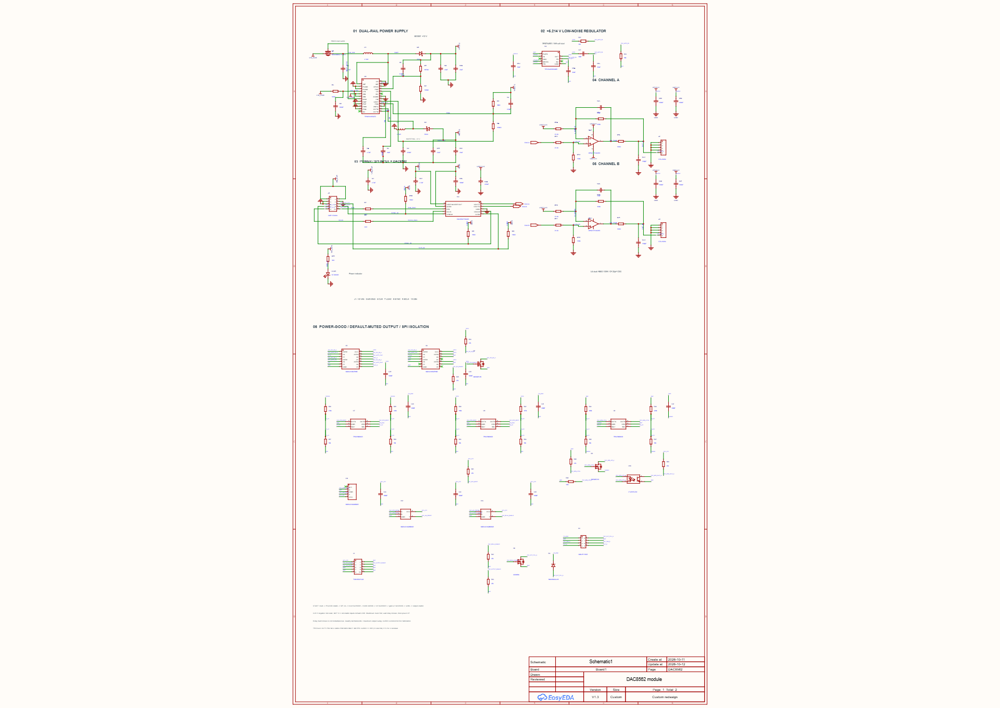
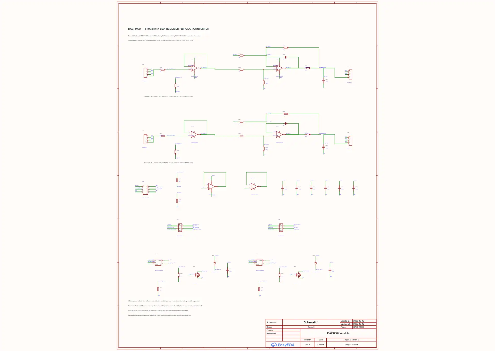

후속 PCB 작업 완료: 100×100mm 위·아래 분리 PCB — 저장·재열기 DRC 통과. 전체 회로도·PCB 최종본은 이 링크에서 받으세요.
작업 기준: 기존 DAC8562 module.eprj2의 1번 DAC8562 / 2번 DAC_MCU 페이지. 새 Board나 별도 회로 프로젝트를 추가하지 않았습니다.
output/validated-revision 수정본들은 TPS7A49 핀 연결 오류가 있어 사용하면 안 됩니다.현재 열린 원본 프로젝트 파일에 수정 내용을 저장했고, 아래 동일 프로젝트의 수정본 사본도 만들었습니다. 원본의 상대 배치는 유지했으며 전체 도면을 평행 이동하고 도면 크기를 확장해 추가 회로를 테두리 안에 배치했습니다.
| 항목 | 결과 |
|---|---|
| 최신 회로도 검증본 | DAC8562 module_schematic_ERC_clean.eprj2 |
| 작업 전 파일 백업 | ../../backups/DAC8562 module_before_schematic_correction_2026-10-12_17-37-46.eprj2 |
| ERC 정리 전 열린 상태 백업 | ../../backups/DAC8562_live_before_ERC_cleanup_2026-10-12.epro2 |
| 두 페이지 저장 후 재열기 | 성공 |
| 독립적인 형상/핀 연결과 EasyEDA 넷리스트 대조 | 불일치 0건, 의도치 않은 연결 0건 |
| 회로도 검증본의 PCB1 / Panel1 | 작업 전 백업과 문서 데이터 해시 동일 |
| ERC | passed=true / details=[] / 미연결 네트 라벨 0개 |
| 부품 지정 | 물리 부품 154개, 제조사 품번 누락 0개. 정밀 저항 일부는 별도 구매 |
최신 검증: ERC 저장·재열기 검사 · 핀 연결 및 네트 라벨 대조. 이전 경고 잔존 시점의 검증 기록은 이 최신 기록으로 대체됩니다.
Q1을 Si2323DDS-T1-GE3으로 교체하고 기존 단자 연결 위치를 맞췄습니다. C4(CN)는 4.7nF, C5(CP)는 10nF로 수정했습니다. LP2985가 단종이라는 의미가 아니라, DAC의 상단 출력 여유를 위해 U2를 TPS7A4901DGNR으로 변경했습니다.
TPS7A49 실제 핀: 1 OUT / 2 FB / 3 NC / 4 GND / 5 EN / 6 NR/SS / 7 DNC / 8 IN / 9 EP. 34k/10k 분압의 공칭 출력은 1.185 × (1+34k/10k) = 5.214V입니다. 입·출력 10µF, NR/SS 10nF, 피드포워드 10nF를 적용했습니다.
출력 저항비는 100k/24.3k, Susumu RG1608N 0.05%·10ppm/℃ 부품으로 지정했습니다. DAC 제어 풀업을 AVDD로 옮겼고, 전원 꺼짐 보호 TTL 버퍼와 기본 출력 차단 릴레이를 추가했습니다. +12V·DAC AVDD·−12V 전원 감시를 추가했고 음전원 감시 신호는 광절연했습니다. 출력 피드백은 릴레이 앞에 남겨 두었습니다.
기동: 출력 차단 → PGOOD 안정 → SPI 활성화 → DAC 리셋 → 양 채널 중간 코드 미리 쓰기 → 내부 기준 켜기 → gain 2 설정 → 안정화 → 출력 활성화. CLR은 양극성 회로의 0V가 아니라 음의 최대 출력으로 이어집니다.
근거: Vishay 단종 통지, Si2323DDS, TPS65131, TPS7A49 핀·분압·기동, DAC8562T

외부 STM32H747 보드의 DAC 신호를 SMA로 받아 입력 버퍼·양극성 변환을 거쳐 SMA로 출력하는 2채널 회로입니다. MCU 자체를 이 보드에 추가한 것이 아닙니다. 공통 GND, 실제 MCU VREF+와 별도의 MCU 3.3V 전원을 제어 헤더로 받습니다.
OPA2277UA/2K5 세 개와 100k/14k 정밀 저항비를 사용합니다. 3.3V 기준에서 Vout = (100k/14k) × (Vin−VREF+/2), 입력 0.25~3.05V가 약 −10~+10V에 대응합니다. 입력 릴레이와 출력 릴레이의 활성화 신호를 분리했습니다.
STM32H747은 12비트 DAC이므로 이 구성에서 출력 1LSB는 약 5.75mV, 데이터시트의 최대 INL 4LSB는 약 23mV에 해당합니다. 수신단 버퍼가 MCU 핀에 연결된 케이블 용량을 없애 주지는 않습니다. MCU DAC의 CL≤50pF 조건을 넘는 케이블에는 송신단 버퍼가 필요할 수 있습니다. 50Ω 부하를 구동하는 회로가 아니며, 종단하지 않는 고입력 임피던스 측정용입니다.
근거: STM32H747 DS12930 Rev 3 표 92·93, G6K 접점·코일 핀, Susumu 정밀 저항 지정

회로도의 ERC와 후속 PCB 설계·DRC 검증은 완료했습니다. 실물 검증에서는 AVDD 최대값·기동 오버슈트, 전원 및 출력 기동/차단 파형, 릴레이 해제 시간, 케이블 안정성, 부하 구동 능력과 채널별 교정 오차를 확인해야 합니다. 급격한 전원 상실에서 릴레이는 즉시 동작하는 클램프가 아닙니다. R5·인덕터 및 스위칭 보상 부품의 조건부 변경은 입력 기울기·부하 측정 후 결정할 사항입니다.